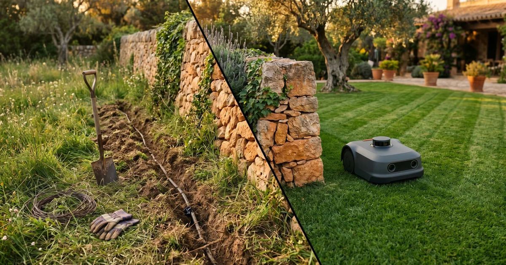
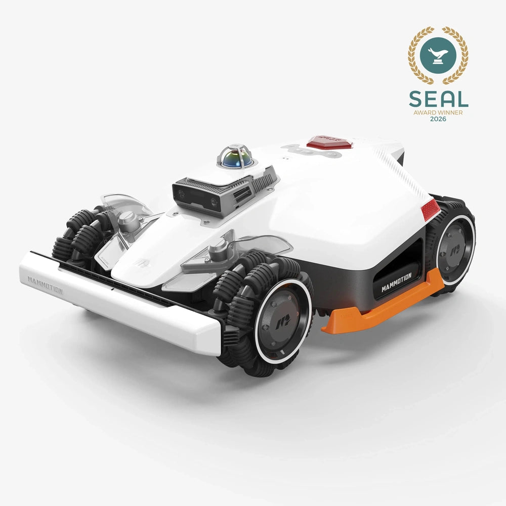
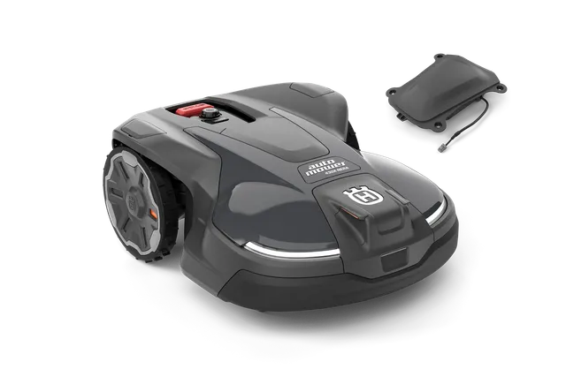
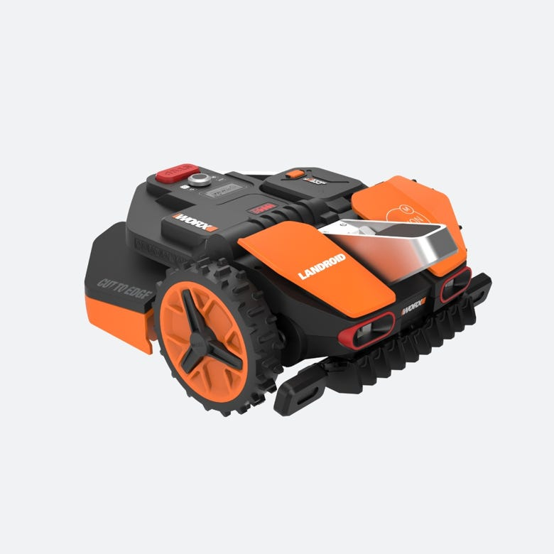

Mammotion LUBA 3 AWD, Husqvarna 430X NERA y Worx Landroid Vision: tres tecnologías distintas (sensor fusion, GPS-RTK y visión pura) para cortar sin cable. Comparativa, checklist de 5 preguntas para elegir y la respuesta por tipo de jardín.
💡 Recomendación IA: v1 (belief destruction). Motivo: el lector que llega buscando "robot cortacésped sin cable" lleva años oyendo que el cable perimetral es "el precio a pagar" — empezar derribando esa creencia agarra al lector que ya tiene el dolor del cable y le abre la puerta a las 3 tecnologías. v2 funciona pero la cifra está discutida; v3 es bonita pero más lenta para una guía Actionable.
[HOOK v1 · belief destruction]
"El cable perimetral es el precio a pagar". Eso decían los manuales hasta 2024 y eso seguían diciendo los comerciales en 2025. En 2026 ya no hay precio que pagar: tres marcas distintas — una china, una sueca, una italoamericana — han cerrado la pregunta con tres tecnologías que no se parecen entre sí. La que te toca depende de tu jardín, no de la marca.
[HOOK v2 · stat impactante]
De los 12 modelos wire-free que se vendían en España en 2024, solo 4 funcionaban sin enterrar 200 metros de cable o instalar una baliza GPS por separado. En 2026 la cifra se invierte: ya hay tres tecnologías serias que no piden nada de eso, y las tres ya están en Amazon España.
[HOOK v3 · escena sensorial]
Domingo, las nueve y media. El robot sale solo de la base, dibuja un giro limpio sobre el césped y sigue una línea recta hasta el muro. Nadie ha enterrado un cable. Nadie ha calibrado una baliza. La diferencia entre 2024 y 2026 cabe en esa secuencia de quince segundos.
Lo que vas a leer: qué cambió de verdad en 2026 con el cable perimetral, las tres tecnologías que lo sustituyen (con sus límites reales), checklist de 5 preguntas para saber cuál te toca, tabla comparativa por perfil de jardín y veredicto sin afiliados.

Composición ROBOHOGAR · yuxtaposición editorial · a un lado del muro de piedra, la zanja del cable perimetral con la pala todavía clavada; al otro, el robot wire-free trabajando solo. Dos épocas del jardín español en un mismo plano.
El cable perimetral del cortacésped robot tradicional era una de esas decisiones de ingeniería que parecían razonables en 2010 y se convirtieron en losa quince años después. La idea era sencilla: enterrar 100-300 metros de cable a lo largo del perímetro del jardín, conectarlos a una estación que emitía una señal eléctrica débil, y el robot reconocía el límite por inducción.
Lo que vendía cualquier comercial de Husqvarna o Gardena en 2018: "se entierra una vez y dura 10 años". Lo que pasaba en la realidad: el cable se rompía con la primera azada de la próxima primavera, las raíces del cerezo lo cortaban a los dos años, el riego automático lo desplazaba, y reenterrarlo era una mañana de domingo perdida con un detector de cables y una pala. Cada vez que el dueño rediseñaba un parterre, se rehacía el perímetro.
Hubo intentos intermedios entre 2022 y 2024: balizas GPS por separado, beacons Bluetooth, sistemas RTK con antena en el tejado. Cada solución arreglaba un problema y abría dos nuevos. La instalación seguía pidiendo un técnico medio-cualificado, y el ahorro respecto al cable era marginal.
Lo que cambia en 2026 son tres soluciones que han pasado de prototipo a producto vendible en España: visión por cámara (Worx), GPS-RTK con estación de referencia integrada (Husqvarna NERA con kit EPOS) y fusión sensorial completa — LiDAR de 360°, RTK y cámara dual con IA — (Mammotion LUBA 3 AWD). Las tres están ya en distribución ES con precio en euros y servicio postventa local. Cada una resuelve el problema desde un ángulo distinto y cada una tiene un perfil de jardín que le encaja mejor.
No son tres modelos rivales que hagan lo mismo: son tres ingenierías distintas para resolver el mismo problema. La elección entre uno y otro depende menos del precio y más de cómo es tu jardín.
Desde 2.299 € (LUBA 3 AWD 1500) · 2.799 € (3000) · 3.499 € (5000)

Mammotion LUBA 3 AWD: torreta LiDAR 360° en la cabeza + tracción a las 4 ruedas + cámaras duales delanteras. Fuente: Mammotion EU.
La apuesta de Mammotion es no fiarse de un sensor único. La Tri-Fusion Positioning combina tres tecnologías a la vez: LiDAR de 360° con torreta giratoria en la cabeza del robot, NetRTK (señal GPS de precisión centimétrica vía red móvil) y dos cámaras frontales con IA. Cuando una falla — un día nublado bloquea el GPS, una rama tapa la cámara — las otras dos siguen y el robot no se pierde.
El plus diferencial es la tracción a las cuatro ruedas (AWD): la marca declara pendientes de hasta el 80 % (38,6°), territorio donde un Husqvarna se planta. El cuerpo es más alto y voluminoso que la competencia — diseño todoterreno, no de salón.
Para quién sí:
Jardines complejos con pendientes, parterres irregulares, zonas de sombra que rompen el GPS, varias zonas con conexiones estrechas (hasta 50 zonas en el modelo 5000).
Para quién no:
Jardín plano, rectangular, soleado de menos de 800 m². Pagas funcionalidad que no vas a usar — el Worx con visión simple resuelve igual a la mitad de precio.
Aproximadamente 4.500-5.500 € con kit EPOS (varía por distribuidor)

Husqvarna Automower 430X NERA: gama X premium sueca, cuerpo robusto, sin cable gracias al kit EPOS. Fuente: Husqvarna España.
Husqvarna llega al wire-free desde el otro extremo: una marca que llevaba 30 años perfeccionando el robot con cable, y que en 2024 lanzó el sistema EPOS — su propia tecnología GPS-RTK — para sustituirlo. El kit EPOS añade una estación de referencia (un mástil con antena que se atornilla a la pared o se hinca en el suelo) que envía correcciones GPS al robot por radio. La precisión es de pocos centímetros y los límites virtuales se dibujan en la app.
Frente a Mammotion: una sola tecnología bien resuelta, con la fiabilidad de la marca que más años lleva en el negocio. Frente a Worx: el GPS-RTK no se inmuta con la lluvia, la niebla o un día sin luz. Lo que paga el comprador es la marca y la madurez del soporte técnico ES (red de servicios oficiales muy presente, recambios disponibles), no necesariamente más prestaciones que la competencia.
Para quién sí:
Jardín grande (hasta 4.800 m² declarados), exigencias de fiabilidad altas, importa el servicio técnico oficial, presupuesto que admite premium europeo. Jardines complejos con muchas zonas — el sistema lo soporta desde su origen.
Para quién no:
Presupuesto ajustado o jardín pequeño-medio. La estación EPOS exige visibilidad clara del cielo: jardines muy cerrados con árboles altos pueden tener problemas de cobertura.
Desde 799 € (Vision M600) · alrededor de 1.099 € (M800) · 1.399 € (L1600)

Worx Landroid Vision M600: cámara HDR de 141° en el frontal, navegación por visión sin GPS ni RTK ni baliza. Fuente: Worx · T3 review.
Worx aborda el problema desde el ángulo más simple: una cámara HDR de 141° procesando 15 imágenes por segundo, IA que reconoce hierba versus no-hierba y un sistema que detecta obstáculos en 0,05 segundos. Cero GPS, cero RTK, cero baliza. Lo sacas de la caja, lo enseñas dando una vuelta al perímetro y empieza a trabajar.
La instalación es la más simple del mercado en 2026 — alrededor de 30 minutos según el fabricante para un jardín pequeño-medio. El precio entra en €799, dos veces más barato que el Mammotion básico y entre tres y cuatro veces más barato que el Husqvarna premium.
El truco está en lo que la cámara no resuelve. Necesita luz suficiente: corte nocturno o con poca luz baja drásticamente. Necesita que el contraste hierba/no-hierba sea claro: zonas donde el césped invade la grava o linda con flores en flor pueden confundirla. Y la garantía de cobertura cae con jardines muy grandes (>1.600 m²) o muy fragmentados en parcelas no contiguas.
Para quién sí:
Jardín plano o casi plano de hasta 1.600 m², con perímetro claro (muros, vallas, bordillos definidos), sin árboles que arrojen sombra densa permanente. Comprador primerizo que quiere gastar lo menos posible y empezar a usarlo el mismo día.
Para quién no:
Jardines con pendientes pronunciadas, zonas separadas que el robot tiene que cruzar por un pasillo de grava, parterres mal delimitados, exigencias de corte en horas con poca luz.
Antes de entrar en la tabla resumen, contesta estas cinco preguntas. Si las respondes con honestidad, la elección entre los tres modelos casi se hace sola.
📋 Snippet 1 · Checklist 5 preguntas · posición tras sección Las tres tecnologías
En Beehiiv: escribe /html → "Custom HTML block" → pega el código de abajo.
<div style="background:#FFF9EF;border:1px solid #F5A623;border-radius:10px;padding:20px;margin:20px 0;font-family:'Inter',-apple-system,BlinkMacSystemFont,Roboto,sans-serif;color:#0C0C0C;">
<h3 style="font-family:'DM Sans',sans-serif;font-weight:700;font-size:18px;margin:0 0 12px;color:#0C0C0C;">5 preguntas antes de comprar wire-free</h3>
<ol style="margin:12px 0 0 20px;padding:0;line-height:1.5;">
<li style="margin:12px 0;"><strong>¿Cuántos m² reales de césped tiene tu jardín?</strong> Mide solo la superficie verde, no la parcela. Hasta 600 m² → cualquiera de los tres. 600-1.600 m² → Worx, Mammotion 1500/3000 o Husqvarna 410XE NERA. Más de 1.600 m² → fuera el Worx; quedan Mammotion 5000 y Husqvarna 430X o 450X.</li>
<li style="margin:12px 0;"><strong>¿Hay pendientes superiores al 30 % en alguna zona?</strong> Si sí, el Worx queda fuera. La elección se reduce a Mammotion AWD (hasta 80 %) o Husqvarna 430X NERA (declarado 45 %). Por encima del 50 % real, solo Mammotion.</li>
<li style="margin:12px 0;"><strong>¿Tu jardín tiene árboles altos que arrojan sombra densa?</strong> El GPS-RTK puede perder señal bajo la copa. Husqvarna 430X NERA queda comprometido. Mammotion lo compensa con LiDAR + cámara. Worx solo necesita luz: si es luz dispersa pero suficiente, le sirve.</li>
<li style="margin:12px 0;"><strong>¿Cuánto vale la fiabilidad del servicio técnico oficial en España?</strong> Si exiges red oficial y recambios garantizados: Husqvarna. Si prefieres ahorrar: Mammotion o Worx.</li>
<li style="margin:12px 0;"><strong>¿Qué presupuesto máximo tienes?</strong> Hasta 1.000 € → Worx Vision M600. Entre 1.500 y 3.000 € → Worx L1600 o Mammotion LUBA 3 AWD 1500/3000. Por encima de 3.000 € → Husqvarna 430X NERA con kit EPOS o Mammotion 5000.</li>
</ol>
</div>Hemos visto a más de uno comprar el modelo equivocado por el motivo equivocado. Estos son los cuatro tropiezos que más se repiten.
Error 1: comprar el más caro pensando que el más caro va mejor. En wire-free el precio mide presupuesto del fabricante en marca y red comercial, no rendimiento por jardín. Un Worx Vision M600 de 799 € corta perfecto en un jardín plano de 500 m² donde un Husqvarna NERA de 5.000 € hace exactamente el mismo trabajo. Pagar 6× para que el resultado sea idéntico solo tiene sentido si valoras el respaldo técnico oficial.
Error 2: ignorar la exposición lumínica del jardín al elegir Worx. La visión por cámara depende de luz. Un jardín con pinos altos por todo el perímetro deja al Worx en penumbra una parte del día y la cobertura cae. No es un fallo del producto, es una limitación de la tecnología — y se descubre al mes de usarlo.
Error 3: ignorar la cobertura GPS al elegir Husqvarna NERA. El sistema EPOS necesita visibilidad del cielo para la estación de referencia. Si el jardín está en un patio interior con edificios altos alrededor o bajo dosel arbóreo cerrado, el RTK no llega. La tienda no avisa de esto. Hay que comprobarlo midiendo cobertura GPS con una app antes de comprar.
Error 4: no medir la pendiente real. "El jardín tiene un poco de cuesta" significa cosas distintas para cada uno. Un 25 % es un jardín plano para casi cualquier robot. Un 50 % es solo Mammotion AWD. Un terreno estimado a ojo y declarado "leve cuesta" puede dejar al Worx atrapado en un terraplén la primera semana.
Resumen comparativo de los tres modelos enfrentados en las dimensiones que más importan al comprador en 2026.
| Modelo | Tecnología | m² máx | Pendiente | Precio desde |
|---|---|---|---|---|
| Mammotion LUBA 3 AWD | LiDAR + RTK + visión | 5.000 | 80 % | 2.299 € |
| Husqvarna 430X NERA + EPOS | GPS-RTK | 4.800 | 45 % | 4.500 € |
| Worx Landroid Vision M600 | Cámara HDR + IA | 600 (M800: 800 · L1600: 1.600) | 35 % | 799 € |
📋 Snippet 2 · Tabla resumen comparativa · posición sección Veredicto
En Beehiiv: escribe /html → "Custom HTML block" → pega el código de abajo.
<table style="width:100%;border-collapse:collapse;margin:16px 0;font-family:'Inter',-apple-system,BlinkMacSystemFont,Roboto,sans-serif;font-size:14px;">
<thead>
<tr style="background:#F8F8F8;">
<th style="border:1px solid #C0C0C0;padding:10px 8px;text-align:left;font-family:'DM Sans',sans-serif;font-weight:600;color:#0C0C0C;">Modelo</th>
<th style="border:1px solid #C0C0C0;padding:10px 8px;text-align:left;font-family:'DM Sans',sans-serif;font-weight:600;color:#0C0C0C;">Tecnología</th>
<th style="border:1px solid #C0C0C0;padding:10px 8px;text-align:left;font-family:'DM Sans',sans-serif;font-weight:600;color:#0C0C0C;">m² máx</th>
<th style="border:1px solid #C0C0C0;padding:10px 8px;text-align:left;font-family:'DM Sans',sans-serif;font-weight:600;color:#0C0C0C;">Pendiente</th>
<th style="border:1px solid #C0C0C0;padding:10px 8px;text-align:left;font-family:'DM Sans',sans-serif;font-weight:600;color:#0C0C0C;">Precio desde</th>
</tr>
</thead>
<tbody>
<tr style="background:#FFF9EF;">
<td style="border:1px solid #C0C0C0;padding:10px 8px;color:#0C0C0C;"><strong>Mammotion LUBA 3 AWD</strong></td>
<td style="border:1px solid #C0C0C0;padding:10px 8px;color:#0C0C0C;">LiDAR + RTK + visión</td>
<td style="border:1px solid #C0C0C0;padding:10px 8px;color:#0C0C0C;">5.000</td>
<td style="border:1px solid #C0C0C0;padding:10px 8px;color:#0C0C0C;">80 %</td>
<td style="border:1px solid #C0C0C0;padding:10px 8px;color:#0C0C0C;">2.299 €</td>
</tr>
<tr>
<td style="border:1px solid #C0C0C0;padding:10px 8px;color:#0C0C0C;"><strong>Husqvarna 430X NERA + EPOS</strong></td>
<td style="border:1px solid #C0C0C0;padding:10px 8px;color:#0C0C0C;">GPS-RTK</td>
<td style="border:1px solid #C0C0C0;padding:10px 8px;color:#0C0C0C;">4.800</td>
<td style="border:1px solid #C0C0C0;padding:10px 8px;color:#0C0C0C;">45 %</td>
<td style="border:1px solid #C0C0C0;padding:10px 8px;color:#0C0C0C;">4.500 €</td>
</tr>
<tr>
<td style="border:1px solid #C0C0C0;padding:10px 8px;color:#0C0C0C;"><strong>Worx Landroid Vision M600</strong></td>
<td style="border:1px solid #C0C0C0;padding:10px 8px;color:#0C0C0C;">Cámara HDR + IA</td>
<td style="border:1px solid #C0C0C0;padding:10px 8px;color:#0C0C0C;">600 (M800: 800 · L1600: 1.600)</td>
<td style="border:1px solid #C0C0C0;padding:10px 8px;color:#0C0C0C;">35 %</td>
<td style="border:1px solid #C0C0C0;padding:10px 8px;color:#0C0C0C;">799 €</td>
</tr>
</tbody>
</table>💡 Recomendación IA: v1 (perfil de jardín). Motivo: el lector que cierra el artículo tras la checklist necesita una asignación clara por perfil — es lo que prepara la tabla de la sección 5 y lo que la checklist ya empezó. v2 funciona pero rompe el orden mental "primero mi jardín, después el precio". v3 es buen contenido pero pierde fuerza después de la checklist.
[VEREDICTO v1 · perfil de jardín]
Tres tecnologías, tres jardines. Worx Landroid Vision si tu jardín es plano, soleado, hasta 1.600 m², y quieres pagar lo menos posible. Mammotion LUBA 3 AWD si tienes pendientes, sombra de árboles altos o varias zonas separadas — la fusión sensorial es el seguro contra todo lo que rompe a las otras dos. Husqvarna 430X NERA con kit EPOS si exiges red de servicio oficial, presupuesto sin techo y la marca pesa tanto como el producto. El cable perimetral solo sigue siendo válido en una situación: jardín muy fragmentado donde ninguna de las tres tecnologías llega bien — y para 2027 ni eso.
[VEREDICTO v2 · perspectiva de presupuesto]
Por menos de 1.000 € hoy se compra un Worx Landroid Vision M600 que corta sin cable un jardín plano de 600 m² igual de bien que un Husqvarna de 4.500 € en 2024. La diferencia entre el Worx y el Mammotion (a partir de 2.299 €) es funcionalidad para escenarios complejos: pendientes, sombra, varias zonas. La diferencia entre el Mammotion y el Husqvarna NERA (4.500 € hacia arriba) es marca y servicio técnico oficial. Si pagas más de 3.000 € sin tener pendientes ni exigencias de servicio oficial, estás pagando confort psicológico, no rendimiento.
[VEREDICTO v3 · anti-recomendación]
Lo que NO recomendamos en 2026: comprar un cortacésped robot con cable perimetral nuevo. Si te lo ofrecen como "más barato y probado", la tienda está liquidando inventario obsoleto. Comprar un wire-free de marca desconocida sin distribución ES por ahorrar 200 € — el día que falle la postventa será un calvario. Pagar el premium Husqvarna sin tener un jardín que justifique sus 4.500 €. Y elegir el Worx para un jardín con pendientes serias, por mucho que el precio tiente. Cualquiera de estos cuatro errores cuesta más a 3 años que pagar bien la primera vez.
💡 Recomendación IA: v1 (dato de mercado wire-free). Motivo: conecta directo con la tesis del artículo (el cable perimetral en retroceso) y cierra el bucle editorial. v2 es interesante pero más técnico de lo que el lector necesita al final. v3 desvía hacia regulación que no es el ángulo del artículo.
[¿SABÍAS QUE v1 · dato de mercado wire-free]
Husqvarna lleva fabricando cortacésped robot con cable desde 1995 — fueron los primeros en el mundo. En 2024 lanzaron NERA con tecnología EPOS, su primer sistema sin cable, y en su informe anual de 2025 reconocieron que "el segmento wire-free crece a un ritmo cuatro veces superior al segmento clásico". La marca que inventó el cable está enterrando el cable.
[¿SABÍAS QUE v2 · dato técnico LiDAR]
La torreta LiDAR del Mammotion LUBA 3 AWD es la misma tecnología que usa un Tesla Model S Plaid 2025 para detectar peatones a 50 km/h, miniaturizada a un coste 200 veces menor. Un sensor LiDAR de uso automotriz costaba 75.000 € en 2018; el sensor de un robot cortacésped en 2026 cuesta menos de 400 €. La caída de precio del LiDAR es lo que ha hecho viable el wire-free para el hogar.
[¿SABÍAS QUE v3 · dato regulatorio]
El AI Act europeo, que entra en vigor el 2 de agosto de 2026, considera al robot cortacésped como sistema de IA de "riesgo limitado" — la categoría más baja. Eso significa que las marcas tienen que cumplir solo con obligaciones de transparencia (logo de IA visible, info al usuario) pero ningún test de conformidad obligatorio antes de la venta. La barrera para que aparezcan modelos chinos low-cost queda baja, lo que va a presionar precios a la baja en 2027.
📋 Snippet 3 · CTA Suscripción final · posición fin-artículo
En Beehiiv: escribe /html → "Custom HTML block" → pega el código de abajo.
<div style="margin:40px 0 0;padding:28px 24px;background:#283642;border-radius:8px;color:#FFFFFF;text-align:center;font-family:'Inter',-apple-system,BlinkMacSystemFont,Roboto,sans-serif;">
<div style="font-family:'DM Sans',sans-serif;font-size:20px;font-weight:700;color:#FFFFFF;line-height:1.3;margin-bottom:10px;">¿Te ha servido este análisis?</div>
<p style="margin:8px 0 16px;font-size:15px;color:#FFFFFF;line-height:1.55;">De andar por casa. Cada semana.</p>
<a href="https://robohogar.com" style="display:inline-block;background:#F5A623;color:#FFFFFF !important;padding:12px 24px;border-radius:6px;font-weight:700;text-decoration:none;font-size:15px;font-family:'DM Sans',sans-serif;">Suscribirse</a>
<p style="margin:14px 0 0;font-size:12px;color:#FFFFFF;line-height:1.4;">Newsletter gratis. Un email por semana. Cancela cuando quieras.</p>
</div>Análisis editorial sobre fichas oficiales de fabricante, reviews internacionales y distribución comprobada en España (Amazon.es, Husqvarna.es, Worx.com, Mammotion.com). Sin enlaces de afiliado. Precios consultados en abril 2026 — pueden variar; comprueba en la web del fabricante antes de comprar.